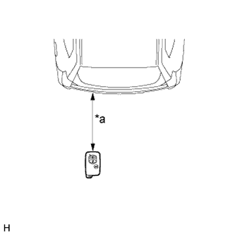

СИСТЕМА МЕХАНИЗМА ОТКРЫВАНИЯ ЗАДНЕГО СТЕКЛА > ПРОВЕРКА РАБОТЫ СИСТЕМЫ |
| ПРОВЕРЬТЕ РАБОТУ МЕХАНИЗМА ОТКРЫВАНИЯ ЗАДНЕГО СТЕКЛА |
Когда все двери разблокированы, убедитесь, что заднее стекло открывается при управлении выключателем механизма открывания заднего стекла.
Когда все двери заблокированы или дверь багажного отделения открыта, убедитесь, что заднее стекло не открывается при управлении выключателем механизма открывания заднего стекла.
| ПРОВЕРЬТЕ ФУНКЦИЮ ДИСТАНЦИОННОГО ОТКРЫВАНИЯ ЗАДНЕГО СТЕКЛА |
Убедитесь, что светодиод передатчика загорается 3 раза при трехкратном нажатии каждого выключателя.
Проверьте, что при нажатии выключателя механизма открывания заднего стекла в течение 1 с или более заднее стекло открывается.
| ПРОВЕРЬТЕ ФУНКЦИЮ ОТКРЫВАНИЯ ЗАДНЕГО СТЕКЛА С ПОМОЩЬЮ СИСТЕМЫ ПОСАДКИ |
Заблокируйте все двери автомобиля, включая дверь багажного отделения. Имея при себе ключ, убедитесь, что при нажатии выключателя механизма открывания заднего стекла заднее стекло открывается.
|  |
Проверьте область обнаружения механизма открывания заднего стекла системы посадки. Держите ключ на той же высоте, на которой расположен выключатель разблокировки двери багажного отделения (приблизительно 0,8 м (2,62 фута)), направив ключ, как показано на рисунке. Убедитесь, что, когда ключ находится в пределах зоны радиусом 0,7 - 1,0 м (2,30 - 3,28 фута) вокруг автомобиля, нажатие выключателя механизма открывания заднего стекла вызывает открывание заднего стекла.
| *a | 0,7 - 1,0 м (2,30 - 3,28 фута) |